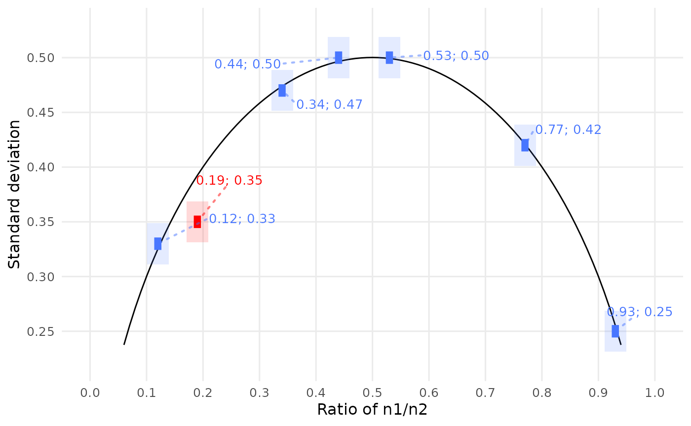
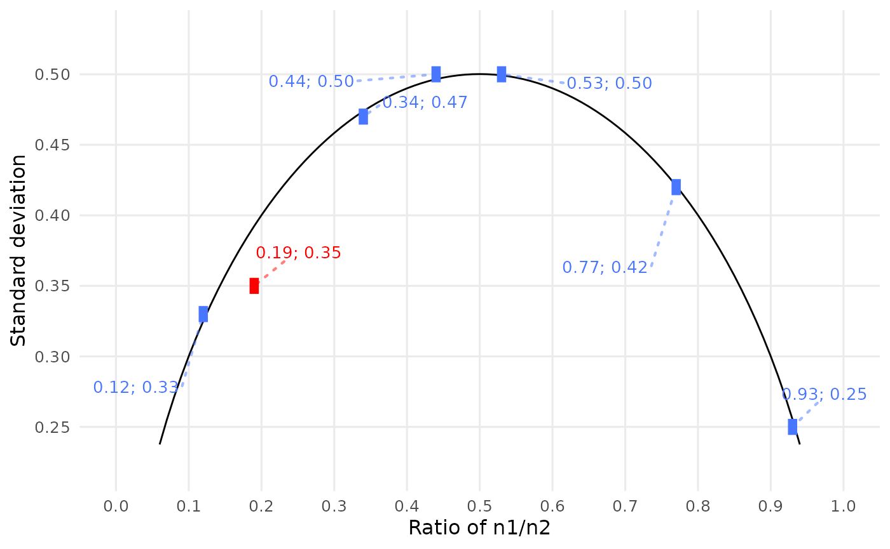

The descriptive binary test, or DEBIT, checks whether the reported mean, sample standard deviation (SD), and sample size of binary data are mutually consistent (Heathers and Brown 2019). Like GRIM, it tests if a given set of summary data can describe the same distribution.
This vignette covers scrutiny’s implementation of DEBIT:
- The basic, single-case
debit()function. - A specialized mapping function,
debit_map(). - The
audit()method for summarizingdebit_map()’s results. - Finally, the visualization function
debit_plot().
DEBIT basics
Consider these summary data for a binary distribution: a mean of 0.35, an SD of 0.18, and a sample size of 20. To test their consistency, run this:
debit(x = "0.35", sd = "0.18", n = 20)
#> 0.35
#> FALSEAs in grim(), the mean needs to be a string. (The same
is true for the SD.) That is because strings preserve trailing zeros,
which can be crucial for DEBIT. Numeric values don’t, and even
converting them to strings won’t help. A workaround for larger numbers
of such values, restore_zeros(), is discussed in the
Data wrangling vignette.
Note that the SD is always assumed to be the sample SD, not the population SD. In some rare cases, this might possibly explain apparent inconsistencies.
debit() has some further arguments, but all of them can
be used from within debit_map(). Since
debit_map() is the more useful function in practice, the
other arguments will be discussed in that context.
Testing multiple cases
Working with debit_map()
If you want to test more than a handful of cases, the recommended way
is to enter them into a data frame and to run debit_map()
on the data frame. Below are the example data from Heathers and Brown’s
(2019) Table 1. A useful way to enter such data is to copy them from a
PDF file and paste them into tibble::tribble(), which is
available via scrutiny:
flying_pigs <- tibble::tibble(
x = runif(5, 0.2, 1) %>% round(2) %>% restore_zeros(),
sd = runif(5, 0, 0.3) %>% round(2) %>% restore_zeros(),
n = 1000
)
flying_pigs
#> # A tibble: 5 × 3
#> x sd n
#> <chr> <chr> <dbl>
#> 1 0.26 0.14 1000
#> 2 0.87 0.15 1000
#> 3 0.68 0.09 1000
#> 4 0.33 0.22 1000
#> 5 0.21 0.23 1000Now, simply run debit_map() on that data frame:
flying_pigs %>%
debit_map()
#> # A tibble: 5 × 11
#> x sd n consistency rounding sd_lower sd_incl_lower sd_upper
#> <chr> <chr> <int> <lgl> <chr> <dbl> <lgl> <dbl>
#> 1 0.26 0.14 1000 FALSE up_or_down 0.135 TRUE 0.145
#> 2 0.87 0.15 1000 FALSE up_or_down 0.145 TRUE 0.155
#> 3 0.68 0.09 1000 FALSE up_or_down 0.085 TRUE 0.095
#> 4 0.33 0.22 1000 FALSE up_or_down 0.215 TRUE 0.225
#> 5 0.21 0.23 1000 FALSE up_or_down 0.225 TRUE 0.235
#> # ℹ 3 more variables: sd_incl_upper <lgl>, x_lower <dbl>, x_upper <dbl>The x, sd, and n columns are
the same as in the input. The main result, consistency, is
the DEBIT consistency of the former three columns.
pigs3 # data saved within the package
#> # A tibble: 7 × 3
#> x sd n
#> <chr> <chr> <dbl>
#> 1 0.53 0.50 1683
#> 2 0.44 0.50 1683
#> 3 0.77 0.42 1683
#> 4 0.19 0.35 1683
#> 5 0.34 0.47 1683
#> 6 0.93 0.25 1683
#> 7 0.12 0.33 1683
pigs3 %>%
debit_map()
#> # A tibble: 7 × 11
#> x sd n consistency rounding sd_lower sd_incl_lower sd_upper
#> <chr> <chr> <int> <lgl> <chr> <dbl> <lgl> <dbl>
#> 1 0.53 0.50 1683 TRUE up_or_down 0.495 TRUE 0.505
#> 2 0.44 0.50 1683 TRUE up_or_down 0.495 TRUE 0.505
#> 3 0.77 0.42 1683 TRUE up_or_down 0.415 TRUE 0.425
#> 4 0.19 0.35 1683 FALSE up_or_down 0.345 TRUE 0.355
#> 5 0.34 0.47 1683 TRUE up_or_down 0.465 TRUE 0.475
#> 6 0.93 0.25 1683 TRUE up_or_down 0.245 TRUE 0.255
#> 7 0.12 0.33 1683 TRUE up_or_down 0.325 TRUE 0.335
#> # ℹ 3 more variables: sd_incl_upper <lgl>, x_lower <dbl>, x_upper <dbl>DEBIT only makes sense with binary means and SDs. Both
debit() and debit_map() check if the inputs
are such data, and fail if they are not:
pigs5 # no binary means / SDs!
#> # A tibble: 12 × 3
#> x sd n
#> <chr> <chr> <dbl>
#> 1 7.22 5.30 38
#> 2 4.74 6.55 31
#> 3 5.23 2.55 35
#> 4 2.57 2.57 30
#> 5 6.77 2.18 33
#> 6 2.68 2.59 34
#> 7 7.01 6.68 35
#> 8 7.38 3.65 32
#> 9 3.14 5.32 33
#> 10 6.89 4.18 37
#> 11 5.00 2.18 31
#> 12 0.24 6.43 34
pigs5 %>%
debit_map()
#> Error in `check_debit_inputs()`:
#> ! DEBIT only works with binary summary data.
#> ! Binary mean (`x`) values must range from 0 to 1.
#> ✖ 11 out of 12 `x` values are not in that range, starting with 7.22, 4.74, and
#> 5.23.Compared to grim_map(), debit_map() is more
straightforward. There is no percentage conversion or accounting for
multiple scale items. The same is true when comparing the basic
grim() and debit() functions. However, both
implementations tap scrutiny’s arsenal of rounding procedures, so that
is discussed next.
Summarizing results with audit()
Following up on a call to debit_map(), the generic
function audit() summarizes test results:
pigs3 %>%
debit_map() %>%
audit()
#> # A tibble: 1 × 6
#> incons_cases all_cases incons_rate mean_x mean_sd distinct_n
#> <int> <int> <dbl> <dbl> <dbl> <int>
#> 1 1 7 0.143 0.474 0.403 1These columns are —
-
incons_cases: number of inconsistent value sets. -
all_cases: total number of value sets. -
incons_rate: proportion of DEBIT-inconsistent value sets. -
mean_x: average of binary distribution means. -
mean_sd: average of binary distribution standard deviations. -
distinct_n: number of different sample sizes.
Visualizing results with debit_plot()
There is a specialized visualization function for DEBIT results,
debit_plot(). Only run it on debit_map()’s
output. It will fail otherwise.
# Determine plot theme for the remaining session:
ggplot2::theme_minimal(base_size = 12) %>%
ggplot2::theme_set()
pigs3 %>%
debit_map() %>%
debit_plot()
DEBIT-consistent value pairs are blue, inconsistent ones red. The black arc is the DEBIT line: Given the sample size, the pairs of mean and SD values are DEBIT-consistent if and only if they cross this line. More precisely, the inner boxes must cross the line — the outer boxes are just pointers to the inner ones, in case these are poorly visible. They have no inherent meaning.
Except for the colors, inner boxes must look exactly like they do here: Their sizes and shapes are completely determined by the mean and SD values. Since inner boxes cannot be enlarged at will, outer boxes might be helpful to spot them at first glance.
However, if outer boxes are not desired, they can be turned off like this:
pigs3 %>%
debit_map() %>%
debit_plot(show_outer_boxes = FALSE)
Color settings and other ggplot2-typical options are available via
arguments, as are settings handed down to
ggrepel::geom_text_repel(), which creates the labels. For
more, see debit_plot()’s documentation.
Testing numeric sequences with debit_map_seq()
DEBIT analysts might be interested in a mean or percentage value’s
numeric neighborhood. Suppose you found DEBIT inconsistencies, as in out
example pigs3 data. You might wonder whether they are due
to small reporting or computing errors.
Use debit_map_seq() to use DEBIT for the values
surrounding the reported means, SDs, and sample sizes:
out_seq1 <- debit_map_seq(pigs3)
out_seq1
#> # A tibble: 30 × 14
#> x sd n consistency rounding sd_lower sd_incl_lower sd_upper
#> <chr> <chr> <int> <lgl> <chr> <dbl> <lgl> <dbl>
#> 1 0.14 0.35 1683 TRUE up_or_down 0.345 TRUE 0.355
#> 2 0.15 0.35 1683 TRUE up_or_down 0.345 TRUE 0.355
#> 3 0.16 0.35 1683 FALSE up_or_down 0.345 TRUE 0.355
#> 4 0.17 0.35 1683 FALSE up_or_down 0.345 TRUE 0.355
#> 5 0.18 0.35 1683 FALSE up_or_down 0.345 TRUE 0.355
#> 6 0.20 0.35 1683 FALSE up_or_down 0.345 TRUE 0.355
#> 7 0.21 0.35 1683 FALSE up_or_down 0.345 TRUE 0.355
#> 8 0.22 0.35 1683 FALSE up_or_down 0.345 TRUE 0.355
#> 9 0.23 0.35 1683 FALSE up_or_down 0.345 TRUE 0.355
#> 10 0.24 0.35 1683 FALSE up_or_down 0.345 TRUE 0.355
#> # ℹ 20 more rows
#> # ℹ 6 more variables: sd_incl_upper <lgl>, x_lower <dbl>, x_upper <dbl>,
#> # diff_var <int>, case <int>, var <chr>Summaries with audit_seq()
As this output is a little unwieldy, run audit_seq() on
the results:
audit_seq(out_seq1)
#> # A tibble: 1 × 17
#> x sd n consistency hits_total hits_x hits_sd hits_n diff_x
#> <chr> <chr> <int> <lgl> <int> <int> <int> <int> <int>
#> 1 0.19 0.35 1683 FALSE 4 2 2 0 4
#> # ℹ 8 more variables: diff_x_up <int>, diff_x_down <int>, diff_sd <int>,
#> # diff_sd_up <int>, diff_sd_down <int>, diff_n <int>, diff_n_up <int>,
#> # diff_n_down <int>Here is what the output columns mean:
x,sd, andnare the original inputs, reconstructed and tested forconsistencyhere.The
hits_*columns display is the number of DEBIT-consistent value combinations found within the specifieddispersionrange; either in total or by varying individual parameters.diff_xreports the absolute difference betweenxand the next consistent dispersed value (in dispersion steps, not the actual numeric difference).diff_x_upanddiff_x_downreport the difference to the next higher or lower consistent value, respectively.Accordingly with the
diff_sd*anddiff_n*columns.
The default for dispersion is 1:5, for five
steps up and down. When the dispersion sequence gets
longer, the number of hits tends to increase:
out_seq2 <- debit_map_seq(pigs3, dispersion = 1:7, include_consistent = TRUE)
audit_seq(out_seq2)
#> # A tibble: 7 × 17
#> x sd n consistency hits_total hits_x hits_sd hits_n diff_x
#> <chr> <chr> <int> <lgl> <int> <int> <int> <int> <int>
#> 1 0.53 0.50 1683 TRUE 25 11 0 14 1
#> 2 0.44 0.50 1683 TRUE 22 8 0 14 1
#> 3 0.77 0.42 1683 TRUE 16 2 0 14 1
#> 4 0.19 0.35 1683 FALSE 4 2 2 0 4
#> 5 0.34 0.47 1683 TRUE 17 2 1 14 1
#> 6 0.93 0.25 1683 TRUE 16 2 1 14 1
#> 7 0.12 0.33 1683 TRUE 16 1 1 14 1
#> # ℹ 8 more variables: diff_x_up <int>, diff_x_down <int>, diff_sd <int>,
#> # diff_sd_up <int>, diff_sd_down <int>, diff_n <int>, diff_n_up <int>,
#> # diff_n_down <int>Visualizing DEBIT-checked sequences
Although it is possible in principle to visualize results of
debit_map_seq() using debit_plot(), it’s not
recommended because the results don’t currently look great. This issue
might be fixed in a future version of debit_plot().
Handling unknown group sizes with
debit_map_total_n()
Problems from underreporting
Unfortunately, some studies that report group averages don’t report
the corresponding group sizes — only a total sample size. This makes any
direct use of DEBIT impossible because only x and
sd values are known, not n values. All that is
feasible here in terms of DEBIT is to take a number around half the
total sample size, go up and down from it, and check which
hypothetical group sizes are consistent with the reported group
means and SDs. debit_map_total_n() semi-automates this
process, motivated by a recent GRIM analysis (Bauer and Francis 2021).
Here is an example:
out_total_n <- tibble::tribble(
~x1, ~x2, ~sd1, ~sd2, ~n,
"0.30", "0.28", "0.17", "0.10", 70,
"0.41", "0.39", "0.09", "0.15", 65
)
out_total_n <- debit_map_total_n(out_total_n)
out_total_n
#> # A tibble: 48 × 15
#> x sd n n_change consistency both_consistent rounding sd_lower
#> <chr> <chr> <int> <int> <lgl> <lgl> <chr> <dbl>
#> 1 0.30 0.17 35 0 FALSE FALSE up_or_down 0.165
#> 2 0.28 0.10 35 0 FALSE FALSE up_or_down 0.095
#> 3 0.30 0.17 34 -1 FALSE FALSE up_or_down 0.165
#> 4 0.28 0.10 36 1 FALSE FALSE up_or_down 0.095
#> 5 0.30 0.17 33 -2 FALSE FALSE up_or_down 0.165
#> 6 0.28 0.10 37 2 FALSE FALSE up_or_down 0.095
#> 7 0.30 0.17 32 -3 FALSE FALSE up_or_down 0.165
#> 8 0.28 0.10 38 3 FALSE FALSE up_or_down 0.095
#> 9 0.30 0.17 31 -4 FALSE FALSE up_or_down 0.165
#> 10 0.28 0.10 39 4 FALSE FALSE up_or_down 0.095
#> # ℹ 38 more rows
#> # ℹ 7 more variables: sd_incl_lower <lgl>, sd_upper <dbl>, sd_incl_upper <lgl>,
#> # x_lower <dbl>, x_upper <dbl>, case <int>, dir <fct>
audit_total_n(out_total_n)
#> # A tibble: 2 × 10
#> x1 x2 sd1 sd2 n hits_total hits_forth hits_back scenarios_total
#> <chr> <chr> <chr> <chr> <int> <int> <int> <int> <int>
#> 1 0.30 0.28 0.17 0.10 70 0 0 0 12
#> 2 0.41 0.39 0.09 0.15 65 0 0 0 12
#> # ℹ 1 more variable: hit_rate <dbl>See the GRIM vignette, section Handling unknown group sizes with
grim_map_total_n(), for a more comprehensive case
study. It uses grim_map_total_n(), which is the same as
debit_map_total_n() but only for GRIM.